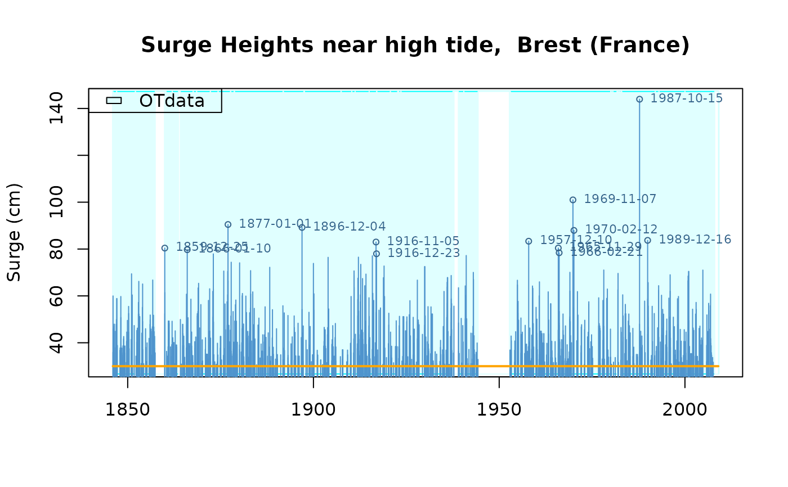
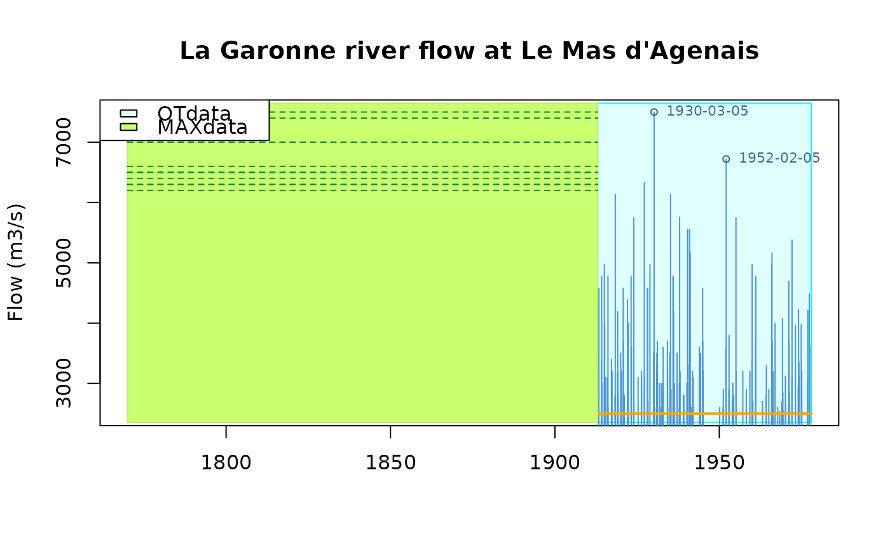
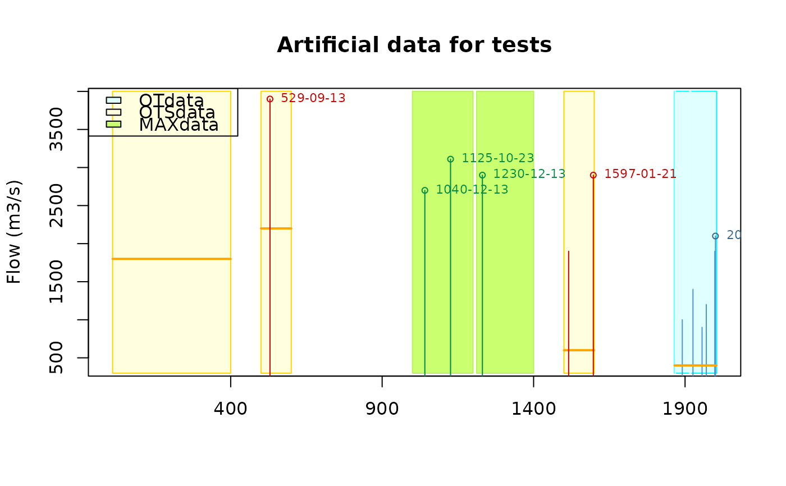

Plot a Rendata object
plot.Rendata.RdPlot 'Rendata' datasets with OT and historical data
Arguments
- x
-
Rendata object i.e. a list object as read with the
readXMLfunction. - textOver
-
Mark values of the variable in the
OTdatapart ofx. Values above thetextOvervalue (if any) will be marked with the character version of the block, typically a year - showHist
-
If
TRUE, the historical periods (is any) are shown on the plot. - ...
-
further args to be passed to
plotfunction.
Details
The plot shows the main data of the object x (the OTdata
part) as well as historical data MAXdata or OTSdata if
any. Different colours are used on the background. This function is
not intended to produce nice plots to be printed.
Note
This function is mainly a companion function of readXML. Its
goal is to check the content of the data read.
Examples
if (require(XML)) {
## use 'index.xml' file shipped with Renext
dir1 <- system.file("Rendata", package = "Renext")
BrestNew <- readXML(name = "Brest", dir = dir1)
plot(BrestNew)
GaronneNew <- readXML(name = "Garonne", dir = dir1)
plot(GaronneNew)
test1 <- readXML(name = "test1", dir = dir1)
plot(test1)
}
#> Loading required package: XML


